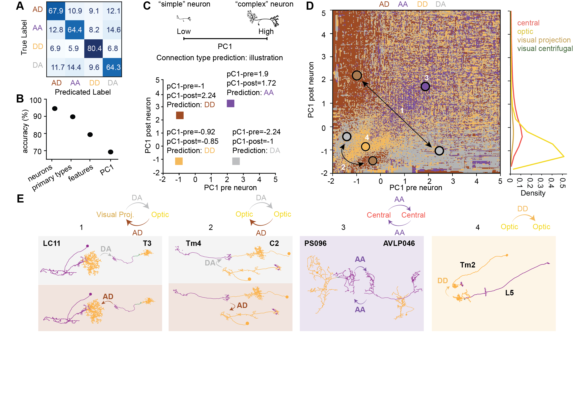
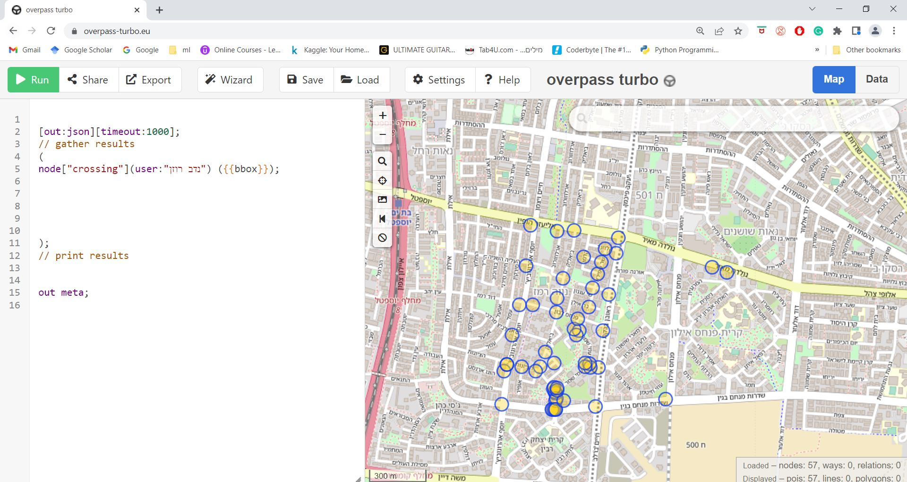
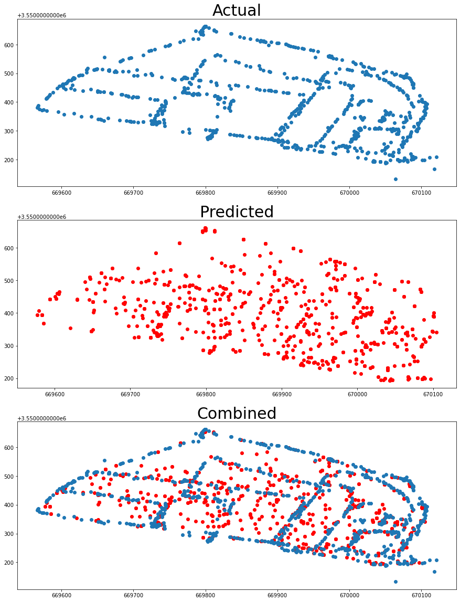
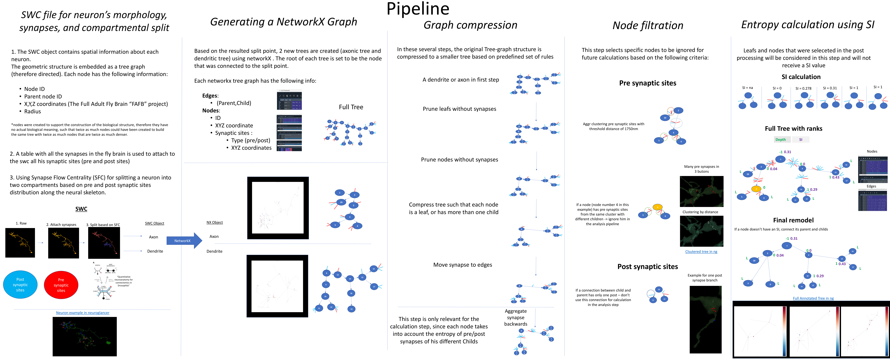

Connectome Analysis Pipeline
University of Haifa · Deutsch Lab
Graph-based analysis of Drosophila connectome data — extraction, processing, feature generation, and visualization of neuronal and synaptic structures.

This section presents my computational and analytical work across scientific research, data science, statistical analysis, machine learning, graph analysis, and pipeline development.
My data work focuses on defining and characterizing systems as a basis for analysis, modeling, and interpretation. Rather than only analyzing existing datasets, I work on identifying the relevant population, components, attributes, relationships, and interactions, then translating them into structured data representations. I have applied this approach across several projects using Python, statistical analysis, machine learning, deep neural networks, graph-based methods, and visualization.
University of Haifa · Deutsch Lab
Graph-based analysis of Drosophila connectome data — extraction, processing, feature generation, and visualization of neuronal and synaptic structures.

Technion · Civil Engineering · ECSL Lab
Pre/post program statistical analysis integrating behavioral outcomes with geographic and environmental mapping.

Technion · Civil Engineering · ECSL Lab
Deep learning model predicting geographic position from WiFi signal fingerprints, supervised by GPS data.

University of Haifa · Deutsch Lab
Graph-based analysis of neuronal structures, using NetworkX tree representations, adjacency matrices, graph features, clustering, and skeleton-based connectome analysis.
